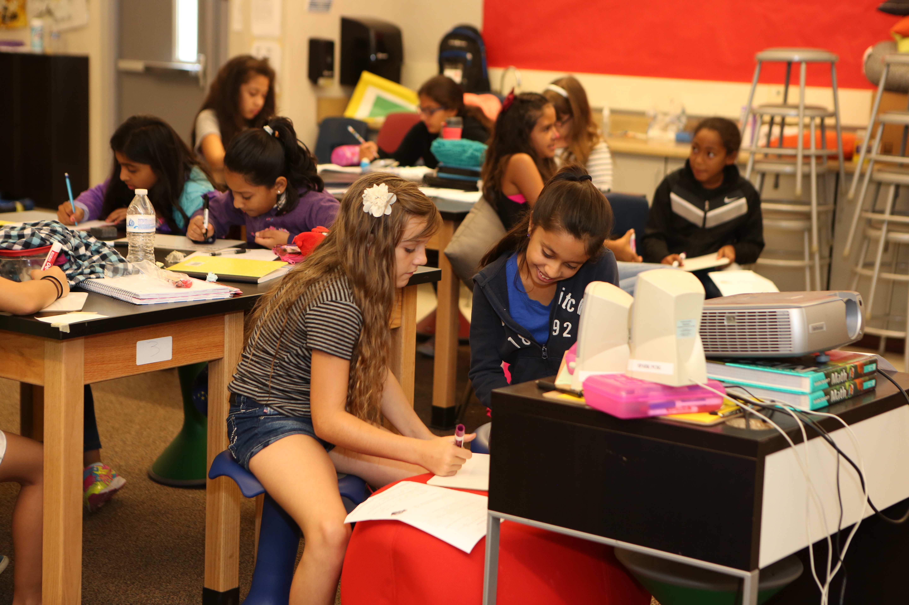
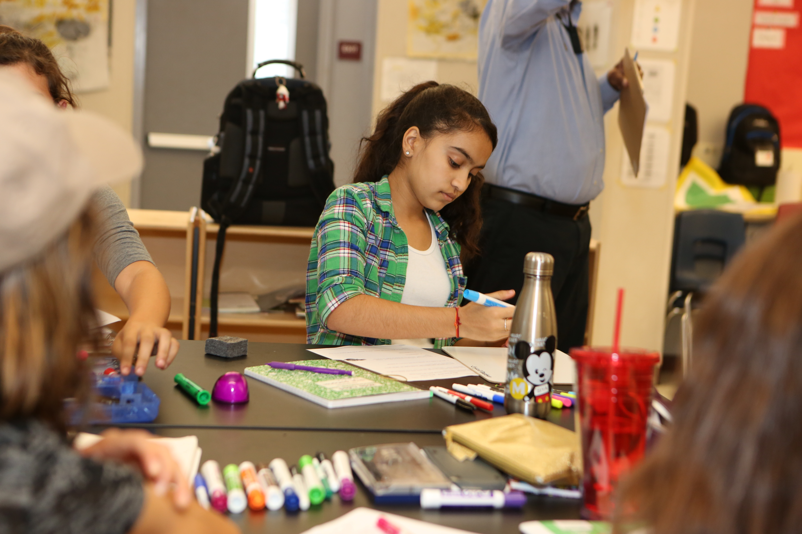
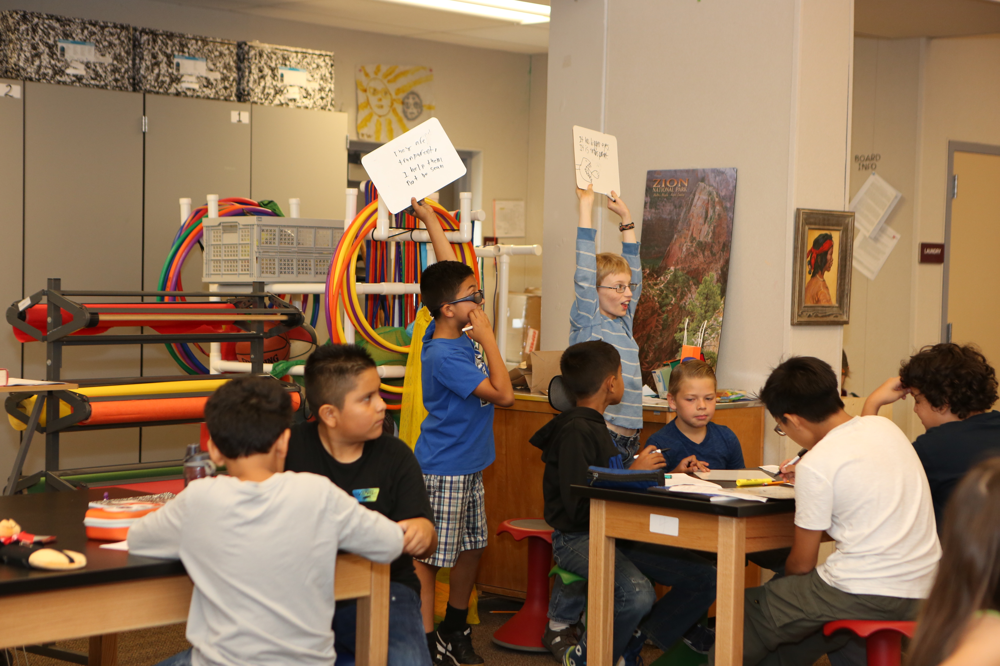

At Spark Charter School, we seek to educate the whole child. Education of character helps children develop a sense of moral integrity and respect for the individual, the community, and democratic ideals. Education of the intellect concerns itself with understanding the learning process, developing intellectual skills, and acquiring knowledge. It is within this context, that we can ensure each child will receive an academically rigorous learning experience within a supportive environment that values social and emotional learning in equal parts to academic achievement.
Many people consider Coding to be the new literacy—a form of digital literacy that some think transcends the ancient paper and words concept of literacy. In 2015, there was a significant push for more coding classes, “Coding Boot camps,” and other kinds of coding activities that have given the idea new urgency. Though there are many persuasive reasons why coding should not be taught in school, the reasons in favor of coding in schools cannot be dismissed. Why should all students be exposed and learn to code?

Coding helps develop important logic and problem-solving skills.
Understanding coding helps students better understand the nature of the world around them, and how and why increasing parts of it function as they do.
Teaching students to code can serve as a gateway to subsequent study of STEM topics -- and hopefully to jobs and careers in related fields.
Being able to code enables new avenues for creativity and creative expression.
Introducing coding in schools can be a force for greater equity and equality of opportunity.
Coding education will help students acquire vocational skills that are immediately relevant to today’s job market.

So, come, join Spark Charter School, and take advantage of all that we have to offer. Be a part of a new kind of school. One where strong academics, STEAM, and a belief in a strong social and emotional program can all coexist. Give your child a Spark today and register for Spark Charter School. Below is a Javascript coding simulator to give you a feel for coding.

Javascript Simulator Input
varname =
varcity =
varfavoriteHobby =
//These two dashes create a comment in javascript. The computer will not read comments.
console.log("Hello, my name is " + name + ", I live in " + city + "and in my free time I love to " + favoriteHobby + ".")
Output
Hello, my name is {{enteredName}}, I live in {{city}} and in my free time I love to {{favoriteHobby}}.
Real Skills - A 21st Century Education
Spark Charter School believes that the goal of education is to give students the knowledge to be contributing members of society. You can find Spark Charter Students sketching up designs for a new product or learning to code.
Whether you have a question, comment, complaint, or would just like to chat, please don't hesitate to reach out to us. We love helping our community and inspiring learners.